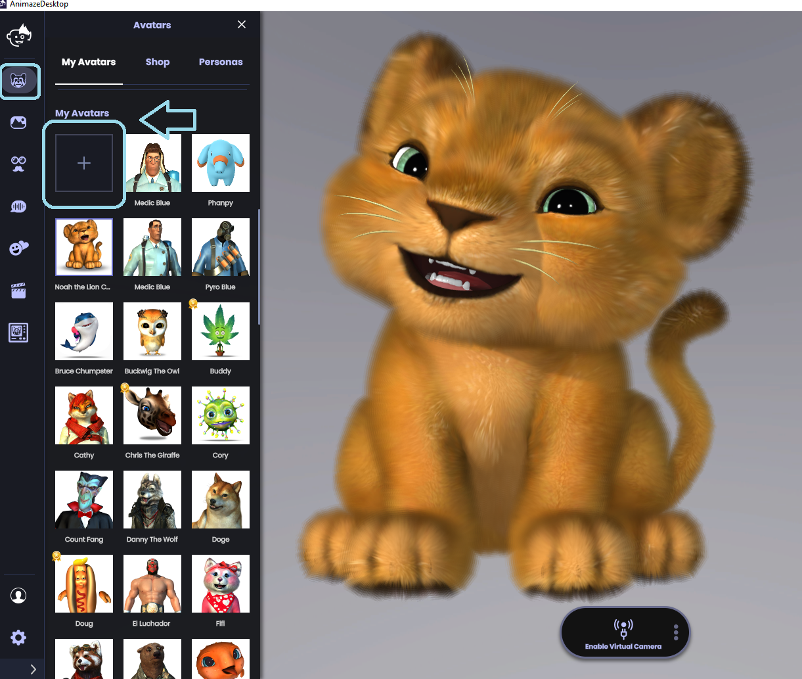
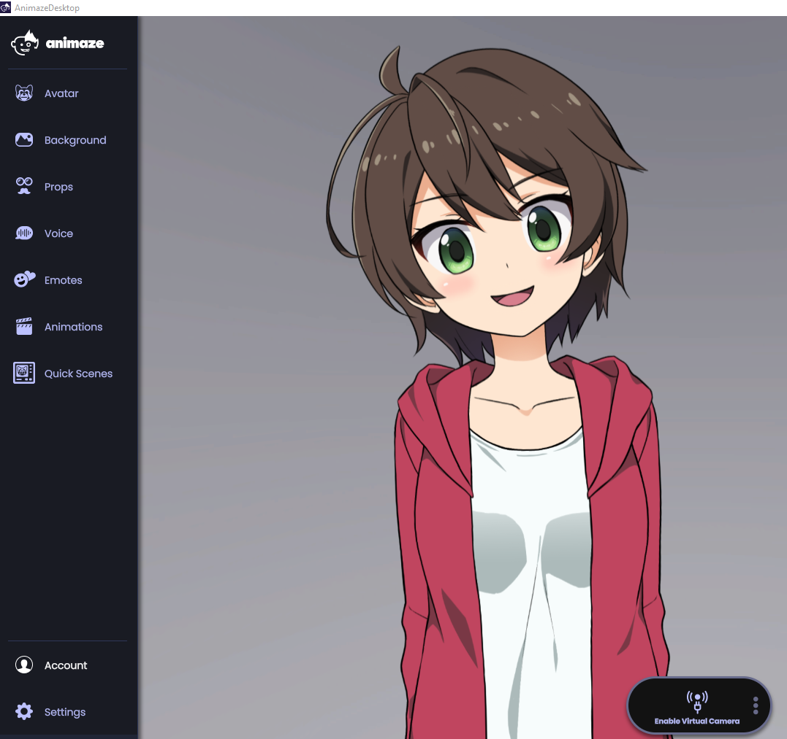

Importing 2D avatars
To work with Animaze, you need to create your Live2D model with the Live2D Cubism Editor version 3.0 or higher.
Live2D released Cubism 3.0 in Spring 2017, so if your model was created after 2017, it likely meets this requirement. If your model was created with a version of Live2D Cubism lower than 3.0, you need to load the model’s Live2D source files in the Live2D Cubism Editor v3.0 or higher and re-export the Live2D runtime files. If you want to take a deeper dive into the 2D avatar universe, we’ve prepared documentation for you here.
When it comes to importing your Live2D model into the Animaze app, the simplest way is through Animaze’s built-in Import Custom Avatars feature.
Open Animaze, click on the Avatar icon in the left menu bar, go to My Avatars and click on the + sign

When the file browser opens, navigate to your Live2D model’s folder, select your avatar’s ‘model3.json’ file and click ‘open’

Your avatar will appear in Animaze!

Step 2: Test Your Avatar
In most cases, Animaze will automatically import your model’s motion parameters, special actions, and special poses. Make sure to test your avatar and ensure it is working as expected. If it does, you are all set, and don’t need to take any more action.
If You Need to Fix Your Avatar...
If your avatar isn’t behaving as expected, you’ll need to import the avatar into the Animaze Editor. The two most common issues are the avatar looks blurry or low resolution and some face and body parts are not responding to tracking inputs.
Learn everything you need to know about Debugging Your Live2D Avatar here.
Also, if you need any help setting up your Live2D model, we’ve put together a list of Motion Parameters right here.